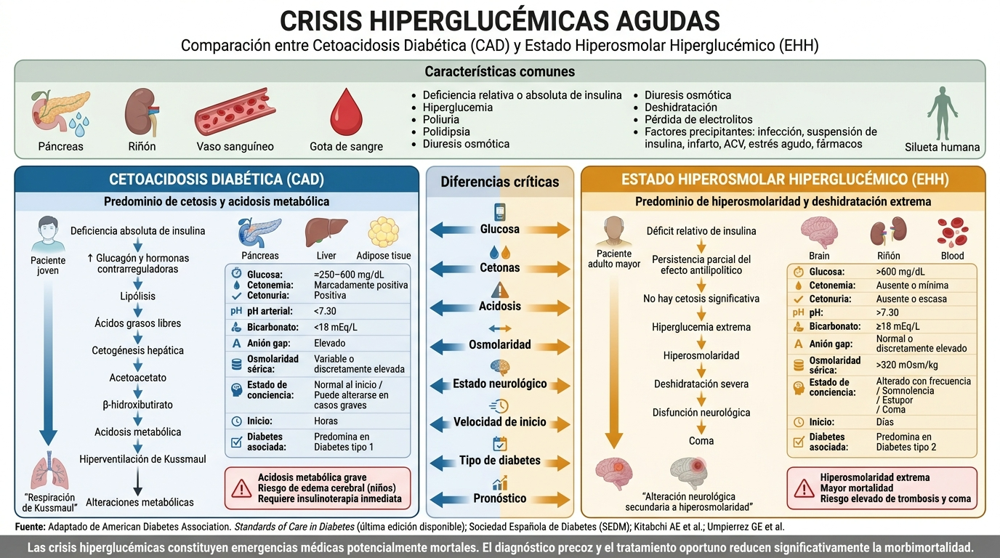
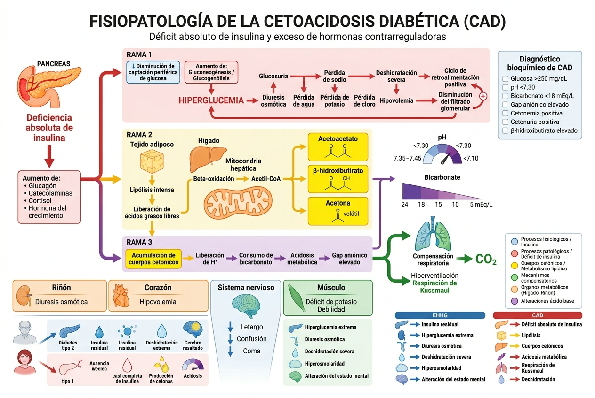
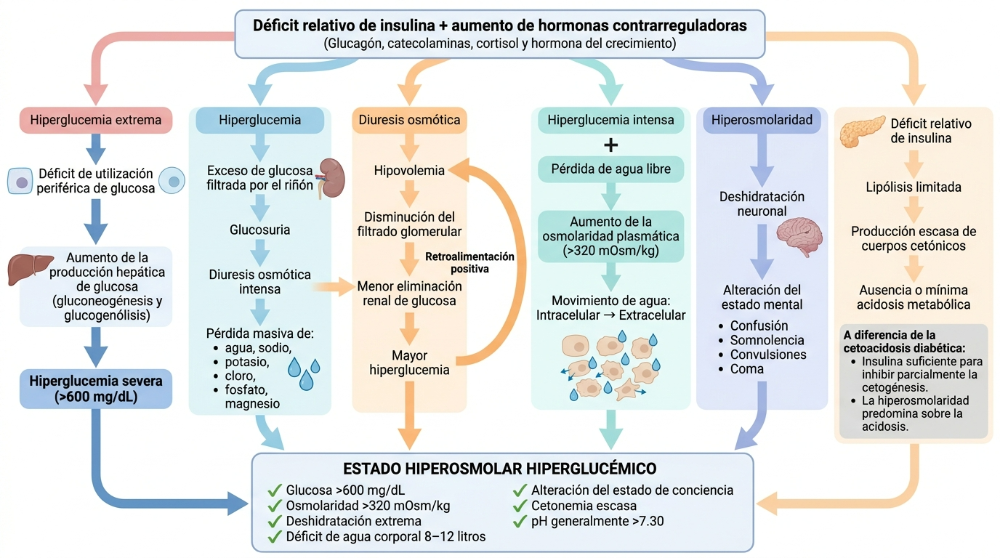

🔴 CAD — Cetoacidosis Diabética
Glucosa>250 mg/dL
pH arterial<7.30
Bicarbonato<18 mEq/L
CetonasPositivas +++
OsmolaridadVariable
Anion Gap>12 mEq/L
ConcienciaAlerta / Obtuso
Tipo DMDM1 (también DM2)
🔵 EHH — Estado Hiperosmolar
Glucosa>600 mg/dL
pH arterial>7.30
Bicarbonato>18 mEq/L
CetonasNegativas / trazas
Osmolaridad>320 mOsm/kg
Anion GapNormal o leve ↑
ConcienciaEstupor / Coma
Tipo DMDM2 (adulto mayor)
🖼️ Comparación visual CAD vs. EHH ▼

Toca la imagen para ampliarla en una pestaña nueva.
🔴 Fisiopatología — Cetoacidosis Diabética (CAD) ▼

Toca la imagen para ampliarla en una pestaña nueva.
🔵 Fisiopatología — Estado Hiperosmolar Hiperglucémico (EHH) ▼

Toca la imagen para ampliarla en una pestaña nueva.
🔴 Severidad de CAD ▼
| Parámetro | Leve | Moderada | Grave |
|---|---|---|---|
| Glucosa (mg/dL) | >250 | >250 | >250 |
| pH arterial | 7.25–7.30 | 7.00–7.24 | <7.00 |
| Bicarbonato | 15–18 | 10–15 | <10 |
| Cetonas orina | + | ++ | +++ |
| Anion Gap | >12 | >12 | >12 |
| Conciencia | Alerta | Alerta / Obtuso | Estupor / Coma |
AG corregido = AG + 2.5 × (4 – albúmina g/dL). Usar cuando albúmina sea baja.
🧪 Exámenes iniciales obligatorios ▼
Laboratorio
- Glucemia capilar y venosa
- Gases arteriales (pH, pCO₂, HCO₃)
- Electrolitos: Na, K, Cl, Mg, P
- BUN / Creatinina
- Cetonas en orina y/o sangre
- Hemograma completo
- Osmolaridad sérica
- HbA1c (si disponible)
Buscar desencadenante
- ECG (IAM silente frecuente)
- Radiografía de tórax
- Urocultivo / Hemocultivo
- Troponinas si sospecha SCA
- β-hCG en mujer en edad fértil
- Lipasa si dolor abdominal
- TSH si EHH sin causa clara
⚠️ Potasio ANTES de insulina. No iniciar insulina con K⁺ <3.5 mEq/L sin corrección previa.
🎯 Las 6 "I" — Desencadenantes frecuentes ▼
| Causa | Claves clínicas |
|---|---|
| Infección (40%) | Fiebre, leucocitosis, foco evidente (neumonía, ITU, pie diabético) |
| Insulina insuficiente | Omisión de dosis, falla del dispositivo, errores en ajuste |
| Inaugural (DM1 nueva) | Joven, poliuria-polidipsia semanas antes, sin diagnóstico previo |
| Infarto (IAM / ACV) | ECG, troponinas, déficit neurológico focal |
| Ingesta de alcohol / drogas | Antecedente social, toxicología |
| Iatrogénico | Corticoides, SGLT2 inhibidores, antipsicóticos atípicos |
Orden de prioridades: Estabilizar vía aérea → Hidratación IV → Evaluar K⁺ → Insulina → Buscar y tratar causa
1
Estabilización (0–30 min)
Vía aérea: GCS ≤8 → intubación. Monitoreo continuo: ECG, SpO₂, TA, FC. Dos vías periféricas ≥18G. Sonda vesical si alteración de conciencia. Obtener K⁺ y glucemia ANTES de iniciar insulina.
2
Hidratación IV inmediata
SSN 0.9% → 1 litro en la primera hora en todos los casos. Luego ajustar según Na corregido y estado hemodinámico. EHH: déficit mayor, hasta 3–6 L en 6h. Evitar corrección demasiado rápida (riesgo edema cerebral).
3
Evaluar K⁺ antes de insulina
K⁺ <3.5: reponer KCl IV, NO iniciar insulina. | K⁺ 3.5–5.0: iniciar insulina + K⁺ en suero. | K⁺ >5.0: iniciar insulina, NO agregar K⁺, repetir en 2h.
4
Insulina regular EV en infusión
0.1 U/kg/h sin bolo de carga (ADA 2026). Meta de caída: 50–75 mg/dL/hora. NO bajar >75 mg/dL/hora. Al llegar a 250 mg/dL (CAD) o 300 mg/dL (EHH): agregar DAD 5%.
5
Monitoreo frecuente
Glucemia capilar c/1h. Gases + electrolitos c/2–4h. Anion gap c/4h. Balance hídrico horario. Vigilar signos de edema cerebral: cefalea, deterioro neurológico, bradicardia.
6
Criterios de resolución — Transición a SC
CAD: glucemia <250, pH >7.30, HCO₃ >18, AG normal, tolera VO. EHH: osmolaridad <315, conciencia normal. Administrar insulina SC 1–2h ANTES de suspender infusión IV.
📊 Flujo de decisión rápida ▼
🚨 Paciente hiperglucémico en urgencias
Glucemia >250, síntomas de descompensación, ± alteración de conciencia↓
📋 Clasificar: ¿CAD o EHH?
pH, HCO₃, cetonas, osmolaridad, glucemia, estado neurológico↓
⚡ K⁺ AHORA — Define el siguiente paso
<3.5 → reponer KCl | 3.5–5.0 → insulina + K⁺ | >5.0 → solo insulina↓
CAD
SSN 1L/h · Insulina 0.1 U/kg/h · K⁺ · HCO₃ solo si pH <6.9EHH
SSN 1–1.5L/h × 2h · Insulina tras fluidos · K⁺ · Sin HCO₃↓
✅ Resolución → Insulina SC
Solapar SC con IV 1–2h. Objetivo: glucemia 140–180 mg/dL en sala.Calculadoras clínicas validadas para uso en urgencias. Los resultados orientan la conducta clínica.
🧮 Osmolaridad sérica efectiva ▼
—
Osmol total (mOsm/kg)
—
Osmol efectiva (mOsm/kg)
Fórmula efectiva: 2×Na + Glucosa/18 · Fórmula total: + BUN/2.8 + Etanol/4.6
⚗️ Sodio corregido por glucosa ▼
—
Na⁺ corregido (mEq/L)
—
Interpretación / Fluido
Na corregido = Na medido + 1.6 × [(Glucosa – 100) / 100] mEq/L
🔬 Anion Gap corregido por albúmina ▼
—
AG simple
—
AG corregido
💧 Déficit de agua libre (EHH) ▼
—
Déficit de agua libre (litros)
Fórmula: Peso × FC × [(Na actual / 140) – 1] · FC: 0.6 masculino / 0.5 femenino · Reponer 50% en primeras 12h, resto en 24h adicionales.
Principio fundamental: La hidratación es el tratamiento MÁS URGENTE. Inicia ANTES o simultáneo a insulina.
🔴 Protocolo de fluidos — CAD ▼
| Fase | Fluido | Velocidad | Condición |
|---|---|---|---|
| 0–1h (expansión) | SSN 0.9% | 1000 mL/h | Siempre, todos los pacientes |
| 1–4h | SSN 0.9% o 0.45% | 250–500 mL/h | Na corr. normal → 0.9% · Na corr. alto → 0.45% |
| Glucemia <250 | DAD 5% + SSN 0.45% | 150–250 mL/h | Mantener glucemia 150–200 hasta resolución cetosis |
Na corr. 135–145: SSN 0.9% · Na corr. >145: SSN 0.45% · Shock: SSN 0.9% rápido o coloides
🔵 Protocolo de fluidos — EHH ▼
| Fase | Fluido | Velocidad |
|---|---|---|
| 0–2h | SSN 0.9% | 1000–1500 mL/h (déficit mayor que CAD) |
| 2–6h | SSN 0.45% | 500–1000 mL/h |
| Glucemia <300 | DAD 5% + SSN 0.45% | Mantener hasta resolución clínica |
⚠️ EHH: déficit hídrico total 8–15 litros. Meta: descenso osmolaridad 3–8 mOsm/kg/h. No corregir Na más de 12 mEq/L en 24h. Los fluidos solos pueden bajar glucemia 100–200 mg/dL.
Metas glucémicas durante tratamiento: CAD → 150–200 mg/dL (hasta resolución cetosis) · EHH → 250–300 mg/dL (hasta recuperación neurológica y osmolaridad normal)
Regla de oro: NO iniciar insulina con K⁺ <3.5 mEq/L. Reponer primero.
💉 Insulina en CAD — ADA 2026 ▼
1
Inicio: insulina regular IV en infusión
0.1 U/kg/h sin bolo de carga (ADA 2026 — CAD moderada/grave). En CAD leve: análogos SC rápidos (lispro/aspart) cada 1–2h son aceptables.
2
Ajuste según respuesta glucémica
Si glucemia no cae ≥50 mg/dL en primera hora → doblar infusión. Si cae >75 mg/dL/h → reducir a 0.05 U/kg/h. Meta: 50–75 mg/dL/hora.
3
Glucemia <250 mg/dL
Agregar DAD 5% al suero. No suspender insulina IV. Reducir a 0.02–0.05 U/kg/h. Mantener glucemia 150–200 hasta resolución cetosis.
4
Transición a insulina subcutánea
Criterios: pH >7.30, HCO₃ >18, AG normal, tolera VO. Dar insulina SC 1–2 horas ANTES de suspender infusión IV. Nunca suspender IV abruptamente.
💉 Insulina en EHH ▼
En EHH la hidratación sola baja glucemia 100–200 mg/dL. Iniciar insulina solo tras reposición hídrica inicial y K⁺ verificado.
| Parámetro | Indicación |
|---|---|
| Dosis inicial | 0.1 U/kg/h sin bolo |
| Meta descenso | 50–75 mg/dL/hora |
| Cambio a DAD 5% | Al llegar glucemia <300 mg/dL |
| Meta mantenimiento | 250–300 mg/dL hasta osmolaridad normal |
| Criterio resolución | Osmol efectiva <315, conciencia recuperada |
🧮 Calculadora de dosis de insulina IV ▼
—
Dosis (U/hora)
—
mL/h (dilución 50U/250mL)
Dilución: 50 U insulina regular en 250 mL SSN 0.9% = 0.2 U/mL
El potasio es la emergencia dentro de la emergencia. El manejo inapropiado causa arritmias mortales.
⚗️ Protocolo de reposición de potasio ▼
| K⁺ sérico | Acción clínica | Dosis KCl IV |
|---|---|---|
| <3.5 mEq/L | ⛔ NO insulina · Reponer KCl urgente · Monitoreo ECG | 20–40 mEq/h hasta K⁺ >3.5 |
| 3.5–5.0 mEq/L | ✅ Iniciar insulina + KCl en suero (caerá con insulina) | 20–30 mEq/L de suero |
| >5.0 mEq/L | ✅ Iniciar insulina · NO agregar K⁺ · Repetir en 2h | 0 — esperar |
Meta: mantener K⁺ 4.0–5.0 mEq/L durante toda la infusión de insulina. Medir c/2h las primeras 6h.
🔬 Fisiopatología del potasio en CAD/EHH ▼
- Pseudo-hiperkalemia al ingreso: La acidosis desplaza K⁺ intracelular al extracelular. El K⁺ sérico "normal" o alto puede ocultar un déficit total corporal de 3–5 mEq/kg.
- Caída dramática con insulina: Activa Na⁺/K⁺-ATPasa → K⁺ entra a la célula en minutos. Puede caer 1–2 mEq/L rápidamente.
- Caída adicional con hidratación: Dilución + corrección de acidosis → más entrada intracelular de K⁺.
- Riesgo de fibrilación ventricular: K⁺ <3.0 mEq/L con insulina activa = emergencia arrítmica. Por eso monitoreo cada 2h.
📈 ECG y alteraciones del K⁺ ▼
| K⁺ (mEq/L) | Hallazgo en ECG | Acción |
|---|---|---|
| <2.5 | T aplanada, onda U prominente, QT prolongado | KCl IV urgente + telemetría |
| 2.5–3.5 | Onda T aplanada o invertida | Reposición IV continua |
| 3.5–5.0 | Normal | Mantener y monitorear c/2h |
| 5.5–6.5 | Onda T picuda y simétrica | No KCl, tratar causa subyacente |
| >6.5 | PR prolongado, QRS ancho, onda seno | ⚡ Gluconato Ca²⁺ IV urgente + bicarbonato + glucosa+insulina |
🧠 Edema cerebral — La complicación más temida ▼
Más frecuente en niños y adultos jóvenes. Mortalidad 20–40%. Buscar activamente durante el tratamiento.
| Aspecto | Detalle |
|---|---|
| Factores de riesgo | Corrección rápida de hiperglucemia, hipotensión, uso de bicarbonato, pCO₂ muy baja |
| Síntomas de alarma | Cefalea intensa, deterioro neurológico DURANTE tratamiento, bradicardia + HTA, cambios pupilares |
| Tratamiento | Manitol 1 g/kg IV · SSN hipertónica 3% · Cabecera 30° · Restricción hídrica · UCI |
| Prevención | No bajar glucemia >75 mg/dL/h · No usar bicarbonato rutinariamente · Corrección gradual de osmolaridad |
🧪 Bicarbonato — ¿Cuándo usarlo? ▼
Uso MUY RESTRINGIDO. El bicarbonato NO mejora outcomes en CAD y puede causar acidosis paradójica del SNC.
| Situación | Indicación |
|---|---|
| pH <6.9 | ✅ Indicado: 100 mEq NaHCO₃ en 400 mL agua + 20 mEq KCl, en 2h. Repetir hasta pH >7.0 |
| pH 6.9–7.0 | ⚠️ Considerar solo si compromiso hemodinámico severo |
| pH >7.0 | ❌ NO indicado. Insulina y fluidos resolverán la cetosis |
| EHH | ❌ Nunca indicado (no existe acidosis significativa) |
⚠️ Otras complicaciones del tratamiento ▼
| Complicación | Prevención / Tratamiento |
|---|---|
| Hipokalemia | Monitoreo K⁺ c/2h · Reposición proactiva según protocolo |
| Hipoglucemia | No suspender abruptamente insulina IV · Agregar DAD antes de llegar a 250/300 |
| Hipernatremia | Calcular Na corregido · Usar SSN 0.45% si Na alto |
| Hipofosfatemia | Reponer solo si <1 mg/dL o disfunción cardiorrespiratoria. No rutinaria. |
| Trombosis venosa | Profilaxis HBPM en todos (alta viscosidad en EHH) |
| Acidosis hiperclorémica | Esperable con SSN 0.9% excesivo. Si AG se normaliza: cetosis resuelta aunque HCO₃ bajo. |
Seleccionar:
Pregunta 1 de 8